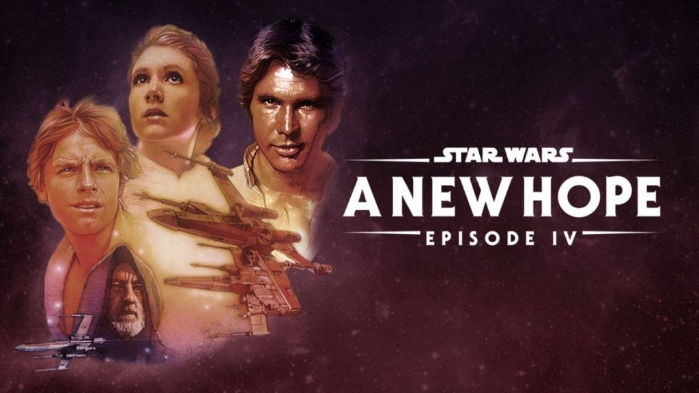

Rather than quickly wishing you all a “Happy New Year” and returning to overeating and watching the NFL, I thought I’d use this opportunity to review the standard year-end ritual itself. This is the time of year we are compelled to revisit the past and contemplate the future, as civilized humans have done for millennia. Sometimes, this process leads to necessary change, which is often temporary but occasionally durable.
In this context, consider the Soviet-era Russian quip, “The future is certain; it is only the past that is unpredictable.” Like many durable quips, it is amusing and ironic but somehow rings true (even in today’s world). It suggests that television pundits and totalitarian governments alike spend far too much time spinning the past while projecting a future vision with unwarranted clarity. Consider, by contrast, “The best way to predict the future is to create it.”1 [I’d amend this adage to say, “The only way….”]
I was inspired to write today by one of my favorite Substacks, Heather Cox Richardson’s “Letters from an American”. I’ve referred to her writings in earlier installments. For context, Professor Richardson is a historian specializing in nineteenth-century America. I am the yin to her yang, a technologist imagining what the twenty-first century can become. She studies the past for a living while I try to envision the future (through a glass darkly2). In her December 28 installment, she wrote an article about the day before the infamous Wounded Knee episode (which occurred on December 29, 1890). She ends with the historian’s observation:
One of the curses of history is that we cannot go back and change the course leading to disasters, no matter how much we might wish to. The past has its own terrible inevitability.
But it is never too late to change the future.
It is not a curse directed at historians alone! Regretting past missteps is as inevitable as it is pointless. And, despite science fiction to the contrary, time is irreversible, so our choices in the here and now affect everything yet to come.
We find ourselves at a point in human history where we have more data and predictive power than ever, yet the future is particularly uncertain. From a climate change perspective, experts spend too much time in the past. It doesn’t matter whether Big Oil, the Indian government, or cow farts are to blame. Fixing the blame doesn’t fix the problem! Neither class-action lawsuits nor comprehensive government regulation is a true solution. As the title of this series suggests, I firmly believe that we must embrace technology, not vilify it!
What we (as humanity) do now really matters, and there are risky choices to be made. But being paralyzed by the fear of making the wrong choice has the same effect as nihilistic fatalism!
At the cusp of a new year, I encourage you to contemplate the “terrible inevitability” of the past, not to create regret or to dig deeper into history but instead to focus on the consequences of actions you can take over the next year. Imagine looking back while relaxing in front of the fire on December 31, 2023. What have you done (or what have we done together) to sieze control of our future?
Don’t consider for a moment that our situation is hopeless or that a single person cannot possibly make a difference in the future!3 And if your resolve is wavering, watch the first Star Wars film again.

Happy New Year!
Thank you for reading Healing the Earth with Technology. This post is public so feel free to share it.
An oft-quoted saying variously attributed to Abraham Lincoln, physicist Denis Gabor (Nobel Prize, 1971, for holography, apropos of Star Wars), and Alan Kay, PARC computer scientist (considered the “father” of the personal computer). I’d opine that none of these fine gentlemen predicted the future that they each “created”.
The expression comes from 1 Corinthians 13:12, where the Apostle Paul explains that we do not now see clearly, but we will do so at the end of time.
Another oft-quoted saying, attributed without evidence to anthropologist Margaret Mead, “Never doubt that a small group of thoughtful, committed citizens can change the world; indeed, it’s the only thing that ever has.”